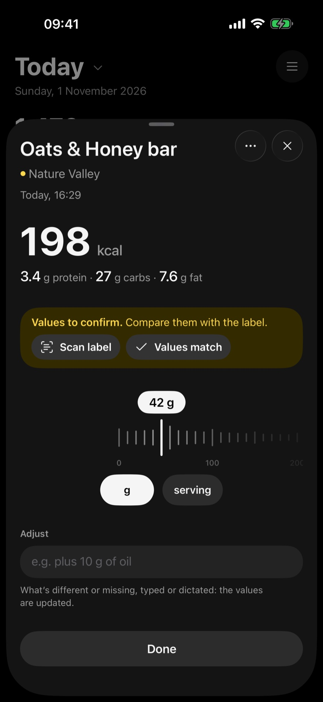

Three marks. You always know what you are looking at.
The brand's own values.
Values found in a product database, not yet checked. Match them with the pack and it turns blue.
By the most advanced AI models.
Say what you ate. Speak, write, scan or take a photo. The same meal, however the moment allows.
Say it. Two eggs and a slice of toast. Known writes the rows for you.
Or type it. One line, the way you would say it. Quantities included.
Scan the pack. Barcode or nutrition label. The brand's own values, first.
Take a photo. Every food on the plate, recognised and counted by the most advanced AI models.
You choose what leads. Calories, protein, carbs or fat in front. Everything else is still counted.
Widgets. Today's numbers on your Home Screen, without opening the app.
A catalog we build together. Nutrition data for packaged products is hard to come by. Each label someone checks becomes a verified product for the next person.

Questions? Answers.
What do the three marks mean?
Blue: values from the label, the brand's own numbers. Yellow: to confirm, values found in a product database and not yet checked; match them with the pack and they turn blue. Grey: estimated by the most advanced AI models, used only where no label exists.
Does Known count everything, or only what I choose?
Everything. Calories, protein, carbs and fat are always counted; you choose which one leads in your diary and widgets.
Which languages does Known speak?
English, Italian, French, German and Spanish for the app. For food, you can speak and write in any language your iPhone understands.
Where is my diary stored?
On your iPhone and in your iCloud. Read the privacy policy for the details.
Is Known for iPhone only?
Yes. Known is built for iPhone, with widgets for your Home Screen.